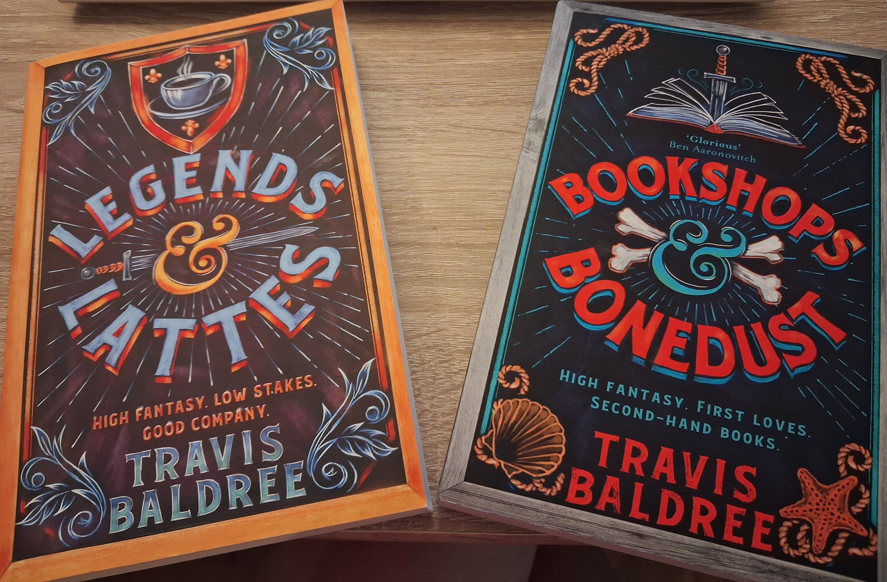

Legends & Lattes –
Eine Orkin, ihr beruflicher Neuanfang und mein Traum von einer gemütlichen Buchhandlung

Unter den Büchern, denen ich auf dem Weg von Casa Donatalina begegnet bin, verdient Travis Baldrees «Legends & Lattes» einen Platz, denn es ist das perfekte Buch für einen regnerischen und leicht melancholischen September, vor allem, wenn ihr darüber nachdenkt, eure berufliche Laufbahn neu zu überdenken oder euch nach einer neuen Stelle umzusehen — sei es, weil die Umstände euch dazu zwingen, oder weil ihr einfach Lust auf eine Veränderung habt und beschlossen habt, dass der September der perfekte Monat dafür ist.
Genau das tut auch Viv, die Ork-Protagonistin dieses Buches. Als sie ein gewisses Alter erreicht hat, ist sie es leid, den ganzen Tag Köpfe einzuschlagen und Tod und Zerstörung zu verbreiten. Sie möchte ihr Leben verändern, ein Café eröffnen und den Duft unbekannter Aromen in die Stadt Thune bringen. Natürlich läuft nicht alles gut, und es gibt weiterhin Feinde und Magie, denen sie sich stellen muss. Aber sie findet auch neue Freunde und jede Menge Hoffnung – und das ist, alles in allem, doch gar nicht so schlecht. Und die Süssigkeiten des Rattenbäckers (meine Lieblingsfigur) sind der perfekte gemütliche Kontrapunkt zwischen Schlacht, Feind und Kaffee.
Beim Lesen dieses Buches habe ich mich sehr in Viv wiedererkannt — nicht weil mein Beruf normalerweise darin besteht, Köpfe einzuschlagen, sondern weil auch ich schon immer einfache Träume hatte: ein kleines, erfüllendes Geschäft zu haben, umgeben von netten Menschen, und Kaffee und Kuchen anzubieten. Manchmal erscheinen solche kleinen Träume attraktiver als prestigeträchtige und hochqualifizierte Jobs. Träumt ihr nicht manchmal davon, ein anderes Leben zu führen? Nun, falls ihr schon einmal davon geträumt habt, glaube ich, dass ihr euch in Viv wiederfinden werdet.
Und wenn ihr, wie ich, die Idee liebt, Kaffee mit einer kleinen, warmen und gemütlichen Buchhandlung zu verbinden, werdet ihr Viv auch in «Bookshop & Bonedust» folgen, auch desselben Autors. Dort gibt es weitere Kämpfe und weitere schräge Figuren, die mich persönlich sehr an die Bewohner des Dorfes erinnern, in dem ich aufgewachsen bin. Erst vor ein paar Tagen sass ich mit meiner Freundin M. bei einem Kaffee, als wir über diese beiden Bücher sprachen. Schon bald kam das Gespräch auf unseren gemeinsamen Traum, eine Buchhandlung mit Café zu eröffnen — einen Treffpunkt für Menschen, die zwischen mehreren Sprachen leben, mit einer Atmosphäre, die fast wie ein «Zuhause» wirkt: ein Ort, an den man kommt, um zu lesen, Menschen zu treffen, ein Stück Kuchen zu essen … Ich kann mir schon die warmen, einladenden Farben der Wände vorstellen und ein Schaufenster mit einer Schrift in altmodischen Buchstaben, die von Büchern in verschiedenen Sprachen erzählt, von einem Ort, an dem man Veranstaltungen rund um Bücher organisieren kann … Kurz gesagt: ein CasaDonatalina aus Backsteinen, ein glücklicher Gegenpol zur virtuellen Version.
Ich weiss nicht, ob M. und ich jemals tatsächlich einen solchen Ort eröffnen werden: Träume stossen manchmal auf die Notwendigkeit, Startkapital, unternehmerische Fähigkeiten, einen Businessplan und Bewilligungen zu haben. Aber Träumen ist der erste Schritt, um irgendetwas Wirklichkeit werden zu lassen. Und wenn eine Krieger-Orkin ein Café eröffnen will, kann vielleicht auch eine mehrsprachige Ingenieurin eine Buchhandlung gründen.